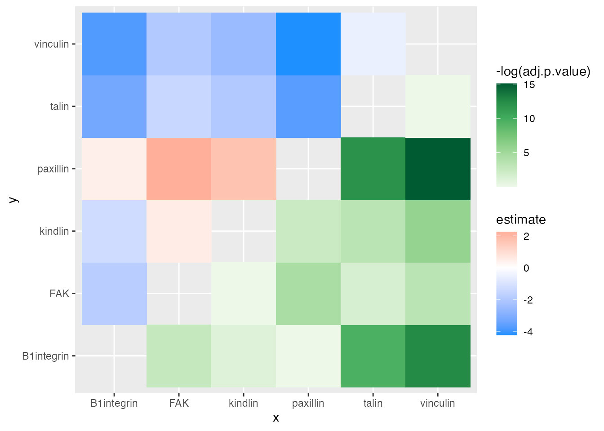

Statistical Test Plotting with ‘ggasym’
Joshua H. Cook
2021-05-15
Source:vignettes/ggasym-stats.Rmd
ggasym-stats.RmdPurpose
One of the great uses of ‘ggasym’ is to plot two values from the results of a multi-way statistical test. Each comparison is a cell, and two values can be used for the fills. Below I give brief examples and plot the differences in mean and the p-value on the symmetric matrix.
Data
The data will be modeled as expression values of 6 genes, each with 10 measurements. I will then as if any of them have different levels of expression.
n_reps <- 10 # number of measurements per gene
expt_std_dev <- 1.5 # std. dev. of measurements
genes <- c("FAK", "talin", "paxillin", "vinculin", "B1integrin", "kindlin")
# "real" expression levels to be used as the mean in `rnorm`
real_expression_levels <- sample(seq(1, 5, 0.1), length(genes), replace = TRUE)
# create a tibble
expr_data <- tibble(
gene = rep(genes, n_reps),
real_expr = rep(real_expression_levels, n_reps),
rep_num = sort(rep(1:n_reps, length(genes)))
)
# add in the measured expression values as a normal distribution around the mean
expr_data <- expr_data %>%
mutate(expt_expr = rnorm(nrow(expr_data),
mean = real_expr,
sd = expt_std_dev
))
head(expr_data)
#> # A tibble: 6 x 4
#> gene real_expr rep_num expt_expr
#> <chr> <dbl> <int> <dbl>
#> 1 FAK 2.3 1 2.92
#> 2 talin 1.3 1 -1.01
#> 3 paxillin 4.8 1 3.41
#> 4 vinculin 1 1 0.558
#> 5 B1integrin 4.3 1 4.29
#> 6 kindlin 3.2 1 6.81Statistical Tests
I then use an ANOVA to test if there are any differences between any of the comparisons of gene expression.
res_aov <- aov(expt_expr ~ gene, data = expr_data)
broom::tidy(res_aov)
#> # A tibble: 2 x 6
#> term df sumsq meansq statistic p.value
#> <chr> <dbl> <dbl> <dbl> <dbl> <dbl>
#> 1 gene 5 144. 28.8 14.0 8.99e-9
#> 2 Residuals 54 111. 2.06 NA NAWith a very low p-value from the ANOVA, I run the Tukey post-hoc test to find which genes are at different levels.
tukey_res <- TukeyHSD(res_aov)
tukey_res
#> Tukey multiple comparisons of means
#> 95% family-wise confidence level
#>
#> Fit: aov(formula = expt_expr ~ gene, data = expr_data)
#>
#> $gene
#> diff lwr upr p adj
#> FAK-B1integrin -1.8081714 -3.7040504 0.08770770 0.0697840
#> kindlin-B1integrin -1.2677974 -3.1636765 0.62808162 0.3694231
#> paxillin-B1integrin 0.4404870 -1.4553920 2.33636610 0.9827300
#> talin-B1integrin -3.2562596 -5.1521387 -1.36038054 0.0000698
#> vinculin-B1integrin -3.7874196 -5.6832986 -1.89154052 0.0000036
#> kindlin-FAK 0.5403739 -1.3555051 2.43625298 0.9581279
#> paxillin-FAK 2.2486584 0.3527793 4.14453747 0.0113651
#> talin-FAK -1.4480882 -3.3439673 0.44779083 0.2298466
#> vinculin-FAK -1.9792482 -3.8751273 -0.08336916 0.0359225
#> paxillin-kindlin 1.7082845 -0.1875946 3.60416355 0.1000603
#> talin-kindlin -1.9884622 -3.8843412 -0.09258309 0.0346062
#> vinculin-kindlin -2.5196221 -4.4155012 -0.62374308 0.0032062
#> talin-paxillin -3.6967466 -5.5926257 -1.80086758 0.0000060
#> vinculin-paxillin -4.2279066 -6.1237857 -2.33202757 0.0000003
#> vinculin-talin -0.5311600 -2.4270390 1.36471907 0.9610525Plotting
Now I want to plot the estimate in the top-left and p adj in the bottom right. First, I must prepare the data for use with geom_asymmat() by passing the results of the Tukey post-hoc test to asymmetrise_stats(). You can see that it returns the data in a tibble with new columns x and y that are the result of splitting comparison.
asymmat_tib <- asymmetrise_stats(tukey_res)
head(asymmat_tib)
#> # A tibble: 6 x 9
#> term contrast null.value estimate conf.low conf.high adj.p.value x y
#> <chr> <chr> <dbl> <dbl> <dbl> <dbl> <dbl> <chr> <chr>
#> 1 gene FAK-B1in… 0 -1.81 -3.70 0.0877 0.0698 FAK B1in…
#> 2 gene kindlin-… 0 -1.27 -3.16 0.628 0.369 kind… B1in…
#> 3 gene paxillin… 0 0.440 -1.46 2.34 0.983 paxi… B1in…
#> 4 gene talin-B1… 0 -3.26 -5.15 -1.36 0.0000698 talin B1in…
#> 5 gene vinculin… 0 -3.79 -5.68 -1.89 0.00000356 vinc… B1in…
#> 6 gene kindlin-… 0 0.540 -1.36 2.44 0.958 kind… FAKFinally, I can plot the data using geom_asymmat().
ggplot(asymmat_tib, aes(x = x, y = y)) +
geom_asymmat(aes(fill_tl = estimate, fill_br = -log(adj.p.value))) +
scale_fill_tl_gradient2(low = "dodgerblue", high = "tomato") +
scale_fill_br_distiller(type = "seq", palette = "Greens", direction = 1)
And add a few styling changes with normal ‘ggplot2’ semantics.
ggplot(asymmat_tib, aes(x = x, y = y)) +
geom_asymmat(aes(fill_tl = estimate, fill_br = -log(adj.p.value))) +
scale_fill_tl_gradient2(
low = "dodgerblue", high = "tomato",
guide = guide_colourbar(order = 1)
) +
scale_fill_br_distiller(
type = "seq", palette = "Greens", direction = 1,
guide = guide_colourbar(order = 2)
) +
theme_bw() +
theme(
panel.background = element_rect(fill = "grey50"),
panel.grid = element_blank(),
axis.title = element_blank(),
plot.title = element_text(hjust = 0.5)
) +
labs(
title = "Differential Gene Expression",
fill_tl = "diff. in\nmean expr.",
fill_br = "-log( adj. p-value )"
) +
scale_x_discrete(expand = c(0, 0)) +
scale_y_discrete(expand = c(0, 0))
One of the conclusions that can be drawn here is that the difference in expression of kindlin and FAK is the greatest and has a very low adjusted p-value. Thus, one of the conclusion is that kindlin is expressed at a lower level than FAK.
For more information, see the complete documentation at the ‘ggasym’ site.